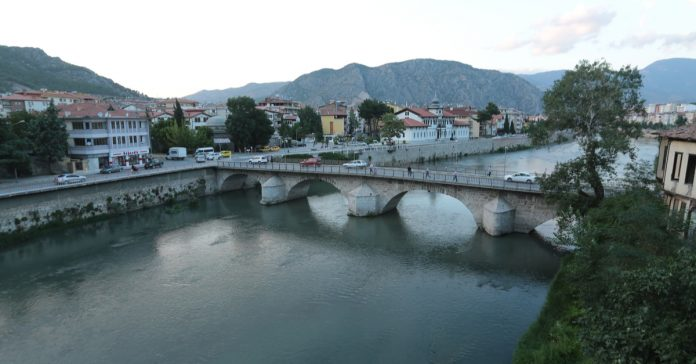
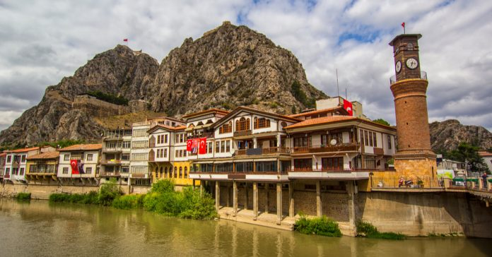
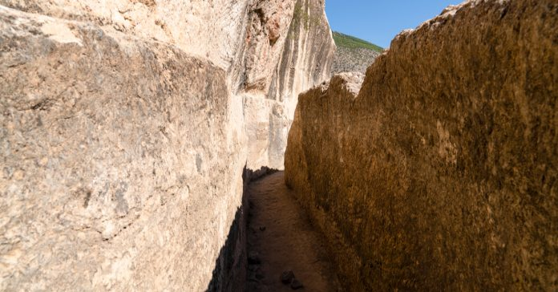
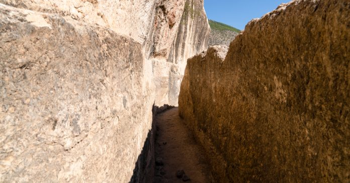

AMASYAM
Tarihçe
Amasya şehrinin kuruluş tarihi kesin olarak bilinmemekle birlikte yerleşimin Hitit dönemine kadar uzadığı tahmin edilmektedir. 1071 yılında yaşanan Malazgirt Meydan Muharebesi sonrasında Anadolu'nun birçok şehri gibi Amasya da 11. yüzyıl içinde Türklerin egemenliğine geçti.
Osmanlı İmparatorluğu döneminde birçok padişah Amasya'da dünyaya gelmiş ve şehzadelik yapmıştır. Bu sebeple Amasya'nın Osmanlı tarihi açısından da büyük öneme sahiptir. I. Mehmet, II. Murat, Fatih Sultan Mehmet, Yavuz Sultan Selim gibi padişahlar Amasya'da şehzadelik yapmışlardır.
19 Mayıs 1919 tarihinde Samsun'da başlayan Kurtuluş Savaşı'nın (Millî Mücadele)'nin ilk adımı, 12 Haziran 1919 tarihinde Mustafa Kemal'in Amasya'ya gelmesiyle atılmıştır. Kurtuluş mücadelesinin planları hazırlanmış, Erzurum Kongresi ve Sivas Kongresi'nin toplanmasına burada karar verilmiş, 22 Haziran 1919 tarihinde yayınlanan "Amasya Genelgesi" ile "Milletin İstiklâlini Yine Milletin Azim ve Kararı Kurtaracaktır" denilerek Millî Mücadele burada fiiliyata geçirilmiştir. Bu itibarla, Amasya, Türkiye Cumhuriyeti'nin kuruluşunda da ilk önemli adımın atıldığı yer olmuştur.
Coğrafya
Amasya Karadeniz'in hemen gerisinde yer alır. Şehir vadi tabanı üzerine kurulmuştur. Anadolu'nun iç kesimlerini Samsun Limanı'na bağlayan yol üzerinde bulunan Amasya, 1930'da inşa edilen demiryolu ile Samsun’a bağlanmaktadır.
Amasya'nın Simgeleri
Kral Kaya Mezarları
Kral Kaya Mezarları, 2015 senesinde UNESCO’nun Dünya Mirası Geçici Listesi’ne dahil edilmiştir. Bu nedenle bu antik mezarlar hem yerli hem de yabancı ziyaretçiler için Amasya’nın en önemli tarihi yerleri arasında yer almaktadır. Amasya’nın tarihi simgelerinden olan Kral Kaya Mezarları, listemizde olmazsa olmazdı. Amasya merkezde yer alan kaya mezarları, Yeşilırmak kenarında yer alan Yalıboyu evlerinin oraya geldiğinizde direkt olarak gözünüze çarpacak güzellikte ilgi çekici bir yapıya sahip. Yeşilırmak boyunca büyüklükleri değişen 21 adet kaya mezarına rastlanmaktadır. Mezarlar içinde en fazla dikkat çekeni ise 15 metre yükseklikte bulunan “Büyük Kral Mezarı” ile yan yana bulunan 3 adet kral mezarıdır.
Amasya Harşena Kalesi
MÖ 4. yüzyılda yapıldığı tahmin edilen Amasya Kalesi, Amasya’ya hakim bir tepe üzerinde kurulmuştur ve ünlü coğrafyacı Strabon’un da bu kalede yaşamış olduğu rivayet edilmektedir. 1146 senesinde Amasya’nın Selçukluların hakimiyetine geçmesinin ardından kale içinde cami, hamam gibi Türk unsurları eklenmiştir. Kale, Osmanlı döneminde ise 150 yıl boyunca şehzadelerin eğitimi için kullanılmış, şehzadelere ve onların yardımcılarına ev sahipliği yapmıştır.
Aynalı Mağara
Amasya’daki günümüze kadar en sağlam bir şekilde ulaşabilen kral mezarlarından olan Aynalı Mağara, bölgenin ilgi çeken tarihi noktaları arasında bulunmaktadır. Mezarın MÖ 2. yüzyılda yaşamış olan Mitra rahibi Tes’e ait olduğu tahmin edilmektedir. Mezarın duvarlarındaki “Büyük Rahip Tes” yazısı da bu sanıyı güçlendirmektedir. Mezarın 11. yüzyılda Bizanslılar tarafından keşişhane olarak da kullanıldığı düşünülmektedir.
Ferhat İle Şirin Aşıklar Müzesi
Ferhat ile Şirin efsanesi, sevgiye dair geçmişten günümüze aktarılan önemli efsaneler arasında bulunmaktadır. Şehirde böyle bir müzenin bulunması ise, Ferhat ile Şirin’in Amasya’da yaşadığına inanılmasından dolayıdır. Müze içinde Ferhat ile Şirin’in yanı sıra Leyla ile Mecnun, Kerem ile Aslı gibi aşkın önemli simgeleriyle ilgili balmumu heykelleri sergilenmektedir.
Yemek Kültürü
{kind=link}
{kind=link}
{kind=link}
{kind=link}
{kind=link}
Gezilecek Başka Yerler
 
 

Faydalı Olabilecek Bağlantılar
T.C. Amasya Valiliği
T.C. Amasya Belediyesi